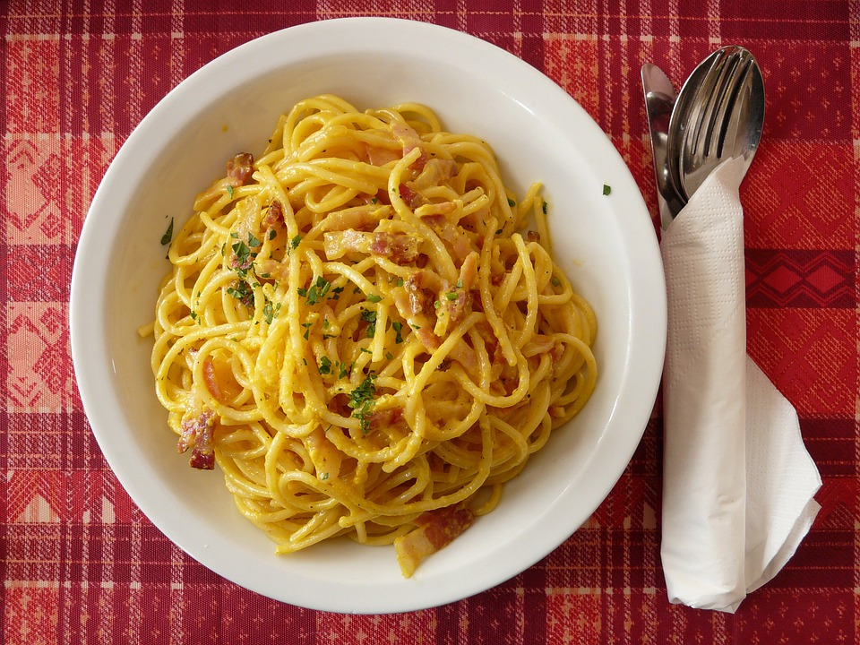

Spaghetti Carbonara

Description
The easiest pasta dish you will ever make with just 5 ingredients in 15 min, loaded with Parmesan and crisp bacon goodness!
Ingredients
- Spaghetti 200g
- Eggs 2
- Bacon 4 slices
- Grated Parmesan 1/2 cup
- Minced garlic 4 cloves
- Parsley
- Salt
- Ground pepper
Steps
- Start to cook pasta in boiling salted water, according to package instructions.
- In a small bowl, whisk together eggs and Parmesan; set aside.
- Heat a large skillet. Add bacon and cook it until it becomes brown and crispy. Reserve excess fat.
- Reduce heat to low and stir in garlic for about 1 minute.
- Stir in pasta and eggs mixture, and gently toss to combine. Season with salt and pepper. Add reserved pasta water,
one tablespoon at a time, until desired consistency is reached.
- Serve immediately, garnished with parsley, if desired.